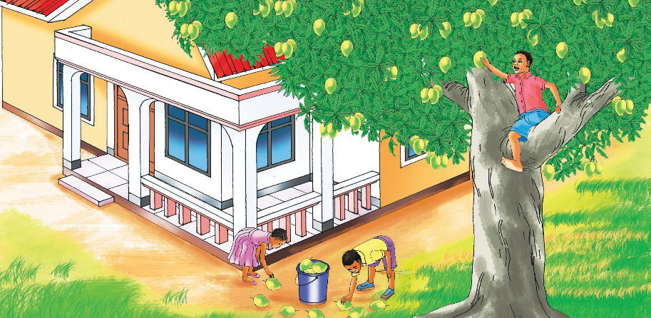

D.
Soma habari hii, kisha fanya zoezi.

Amosi alikuwa juu ya mti akichuma maembe. Mti wa maembe ulikuwa kando ya nyumba yao. Mti huo ulikuwa na maembe mengi sana. Ulikuwa na maembe mabichi na yaliyoiva. Amosi alichuma maembe yaliyoiva na kuyadondosha chini. Lulu na Kiba walimsaidia kuokota maembe na kuyatia ndani ya ndoo. Walipomaliza kuokota maembe yaliyokuwa chini ya mti, waliingia nayo ndani. Walipofika ndani, waliyaosha na kuyapanga ndani ya jokofu.
Maswali
(i) Amosi alikuwa [[blank:item-1]] ya mti akichuma maembe.
(ii) Mti wa maembe ulikuwa [[blank:item-2]] ya nyumba.
(iii) Lulu na Kiba waliyatia maembe [[blank:item-3]] ya ndoo.